Introduction
Breast MRI depends on consistent, high-quality acquisition of multiple pulse sequences, with dynamic contrast-enhanced (DCE) imaging as the core clinical sequence and additional sequences selected per protocol. Despite advances in hardware and reconstruction, artifacts remain a frequent source of variable signal behavior, reduced conspicuity, and inconsistent image quality.
Recognizing MRI artifacts is fundamental to consistent image evaluation. Because artifacts alter image appearance in predictable, physics-based ways, understanding their causes allows radiologists and technologists to separate artifact-related signal changes from baseline tissue signal behavior. This article reviews the most impactful artifacts encountered in breast MRI, provides a systematic approach to recognition and troubleshooting, and closes with practical prevention and quality-control steps.
Overview of Major Artifacts
Table 1 summarizes the major artifact categories, their primary causes, characteristic appearances, and first-line solutions. Several important practical caveats apply to the solutions listed.
For B0 inhomogeneity and fat saturation failures, not all scanners have active shimming capability. On systems without active shimming, the volume (box) shim remains the primary tool and should be carefully optimized - particularly shim-box placement and size - before attributing fat-saturation failure to an irreducible field problem. Where dual-transmit RF systems are available, these should be leveraged first, as they address underlying field non-uniformity rather than only working around it.
For fat-saturation failures, STIR and Dixon-based sequences are effective fallbacks but carry important trade-offs. STIR imposes a significant SNR penalty and its interaction with contrast timing requires care. Dixon techniques improve robustness to B0 variation but also have SNR implications that should be understood before wholesale protocol substitution. The first line of defense remains shimming optimization, repositioning, and hardware utilization - sequence substitution should be a considered second step.
For susceptibility artifacts from metallic hardware, spin-echo and MARS strategies can reduce artifact but often require trade-offs in scan time, SNR, and/or spatial resolution depending on implementation. In time-sensitive, multi-sequence breast MRI protocols, these options should be used selectively rather than routinely.
For aliasing, in addition to FOV expansion and oversampling, saturation bands placed outside the FOV boundary can suppress signal from out-of-field structures - such as the arms or contralateral breast - before they are sampled and can alias into the image. This is a practical and underutilized tool, particularly useful when FOV expansion would compromise resolution.
| Artifact | Cause | Appearance | Solution |
|---|---|---|---|
| B0 Inhomogeneity | Susceptibility gradients; poor shimming | Low-frequency shading; spatial warping near the periphery | Box/volume shim optimization; active shimming if available; RF/B1 optimization tools (e.g., dielectric pads) |
| Fat-Sat Failure | Off-resonance; B0 inhomogeneity | Bright fat; pseudo-enhancement | Shim first; Dixon or STIR as fallback (SNR trade-off) |
| Susceptibility (Metal) | Clips; markers; ports | Signal void; blooming | SE over GRE; MARS if available (significant quality trade-off) |
| Motion | Respiratory; cardiac; voluntary | Ghosting; blur; zebra pattern | Fast acquisition; compressed sensing; patient coaching |
| Aliasing | Undersized FOV | Wrap-around | Oversampling; larger FOV; saturation bands outside FOV |
| Chemical Shift | Fat-water frequency difference; low BW | Dark/bright bands at interfaces | Increase receiver bandwidth; fat suppression |
| Geometric Distortion | Gradient nonlinearity; B0 variation | Curvilinear spatial error at periphery | Gradient correction algorithms; field map correction for EPI |
| Partial Volume | Tissue folding; thick slices | Apparent signal at folds | Thinner slices; scroll adjacent slices |
| Gibbs Ring (Truncation) | k-space truncation; limited matrix size | Parallel ringing bands at high-contrast interfaces | Increase phase-encode steps; k-space filtering; zero-fill interpolation |
| Enhancement Artifact (Subtraction Error / T1 Shine-Through) | Motion misregistration; pre-existing T1-shortening | False enhancement/suppression on subtraction; persistent high signal from blood products or proteinaceous fluid | Review pre-contrast source images; motion correction; compare across time points |
| Noise / SNR (Zipper, Herringbone) | RF interference; k-space data spike/corruption | Linear banding (zipper) or crisscross pattern (herringbone) across image | Identify and eliminate RF source; RF shielding; k-space spike filtering |
B0 Inhomogeneity
Key Points
- Arises from susceptibility differences at breast-lung interfaces; worse at 3T
- Manifests as smooth low-frequency intensity variation across the image and local spatial warping
- Can obscure small enhancements on subtraction DCE images
- Box/volume shim is the primary tool on systems without active shimming
- Fix: shim optimization first; dual-transmit/RF-B1 optimization tools (including dielectric pads) if available; B0-corrected reconstruction
The main magnetic field must remain uniform across the imaging volume for accurate spatial encoding. In breast MRI, complex tissue interfaces among parenchyma, fat, chest wall, and air-filled lungs create susceptibility gradients that disrupt this uniformity. Effects scale with field strength; artifacts at 3T typically exceed those at 1.5T.
B0 inhomogeneity manifests as low-frequency shading, with smooth signal-intensity variation across the field rather than abrupt boundaries, often resembling a broad lighting gradient drifting across the image. It can also produce local geometric warping near the posterior breast and chest wall. On subtraction images, it can create pseudoenhancement or exaggerate kinetic curves. In practice, these effects can obscure small enhancements on DCE images.
The first corrective step is shim optimization. Many clinical systems offer only volume (box) shimming, which fits a shim volume to the region of interest and adjusts gradient offsets to minimize field variation within it. Careful placement and sizing of the shim box should prioritize the breast regions of interest where uniform fat saturation is required, while minimizing inclusion of non-target air and lung when feasible. On systems with active shimming (higher-order shim coils), automated shimming algorithms can compensate for more complex field patterns. Dual-transmit systems address the related problem of B1 field inhomogeneity and can improve fat saturation uniformity.

Fat Sat / B0 - Port
Unilateral fat suppression failure secondary to port-o-cath. Axial fat-saturated T1-weighted image demonstrates failure of fat suppression in the right breast with preserved suppression on the left. In addition to the focal signal dropout at the port site, the opposite side of the right breast demonstrates diffuse high signal intensity (bright fat), reflecting regional off-resonance that shifts fat signal outside the suppression bandwidth. This pattern indicates a broader ipsilateral B0 perturbation rather than an isolated focal device effect.

Fat Sat / B0 - Peripheral
Peripheral fat suppression failure due to B0 inhomogeneity. Axial fat-saturated T1-weighted image shows characteristic failure at the periphery of the FOV with preserved central suppression. This center-frequency mismatch pattern reflects the inability of volume shimming to compensate for field variation at the magnet periphery, and is a common pitfall in larger patients or those with asymmetric body habitus.
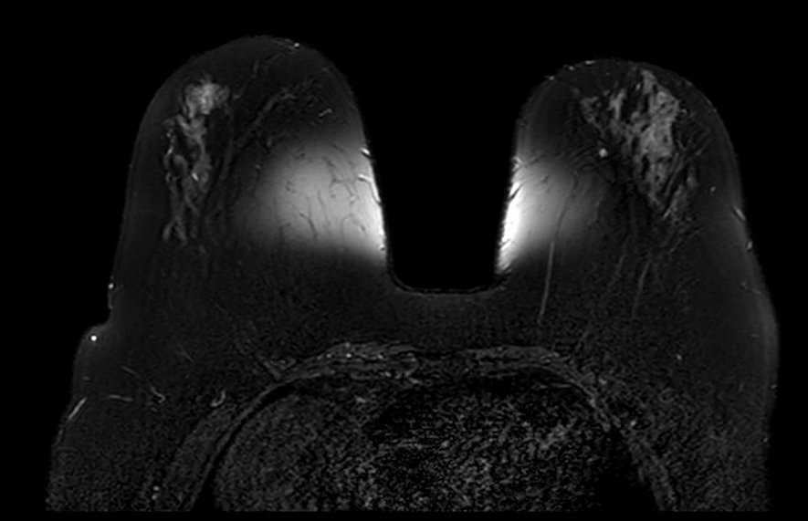
Fat Sat / B0 - T2
Bilateral asymmetric fat suppression failure on T2-weighted fat-saturated sequence. The pattern of inhomogeneous suppression differs between breasts, reflecting spatial variation in B0 across the imaging volume. Fat-saturated T2 sequences are particularly sensitive to field inhomogeneity given their longer echo times and narrower spectral selectivity.
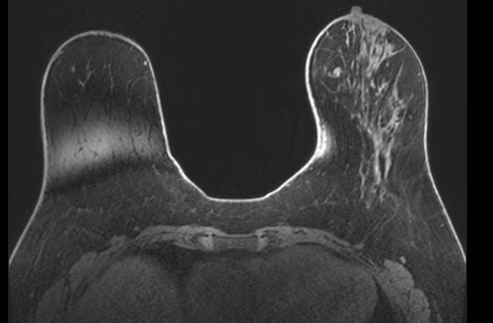
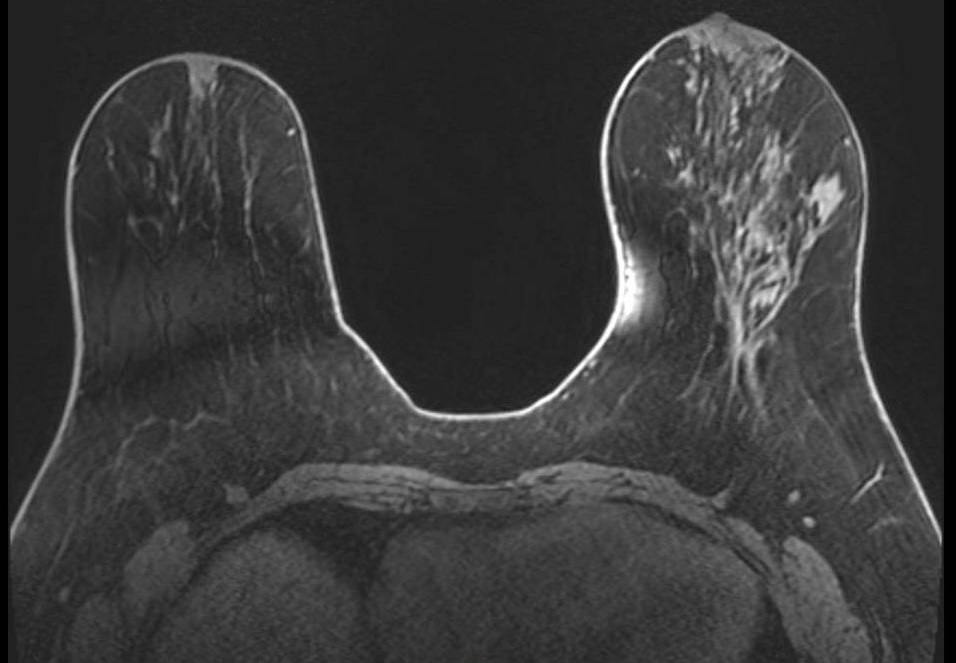
Fat Sat - Multi-slice Progression
Progression of fat suppression failure across image stack. Sequential axial fat-saturated T1-weighted images (A, B) from the same acquisition demonstrate how the extent of fat suppression failure varies across slices, worsening toward the periphery of the prescribed volume. This through-plane variability can mimic asymmetric background parenchymal enhancement if not recognized.
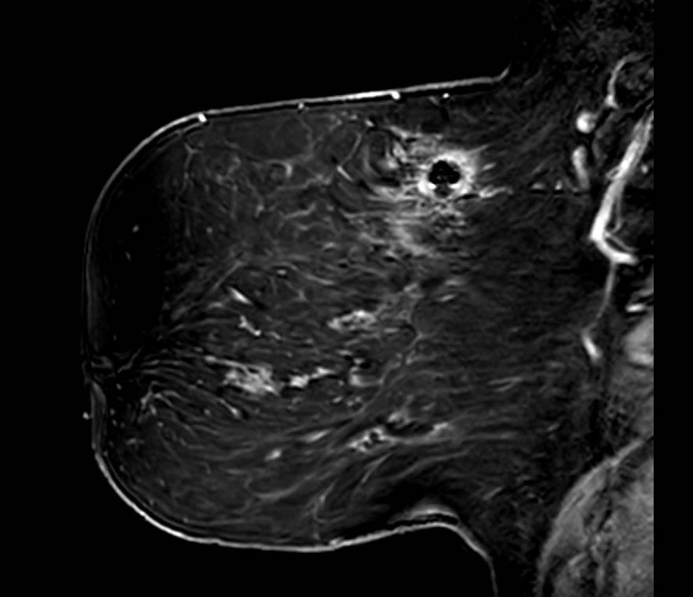
Fat Sat - Mimicker
Diffuse fatty breast composition mimicking fat suppression failure. Axial fat-saturated T1-weighted image in a patient with almost entirely fatty breast composition. The near-complete absence of fibroglandular tissue results in a predominantly dark image that may be misinterpreted as global fat saturation failure. Careful assessment of subcutaneous fat signal and chest wall musculature helps distinguish true failure from extreme fatty composition.
Susceptibility Artifacts (Metallic Hardware)
Key Points
- Caused by biopsy clips, surgical markers, ports, tissue expanders
- Appear as signal voids with surrounding geometric distortion (blooming)
- Can cause secondary effects including regional fat-saturation failure
- SE and MARS sequences reduce artifact but are slow with significant image quality trade-offs
Susceptibility artifacts arise from local magnetic field distortions caused by metallic objects. Biopsy clips, surgical markers, chemotherapy ports, tissue expanders, and even dense calcifications create abrupt changes in the local magnetic field. These distortions cause signal dephasing, resulting in signal voids that extend well beyond the physical size of the object (blooming artifact). The effect is most pronounced on gradient-echo sequences and EPI-based DWI.
Beyond the focal signal void, metallic hardware can cause broader effects on image quality. Field distortion from a port or large clip may disrupt fat saturation throughout the adjacent breast, even in regions distant from the hardware itself.
Spin-echo sequences reduce susceptibility artifact relative to gradient-echo by refocusing dephased spins, and switching from GRE to SE acquisitions is the first practical step when blooming is problematic. Metal-artifact-reduction sequences (MARS) can further reduce geometric distortion but typically involve trade-offs such as longer acquisition time and possible reductions in SNR or spatial resolution, depending on sequence design. In the context of a time-constrained, multi-sequence breast MRI protocol, these are meaningful trade-offs and should be applied selectively.
FIGURE 7 Metal / Susceptibility - Port Multi-sequence
A: T1 pre-contrast | B: T1 post-contrast | C: T2 fat-sat A: T1 pre-contrast | B: T1 post-contrast | C: T2 fat-sat
- T1-weighted pre-contrast, (B) T1-weighted post-contrast, and (C) T2-weighted fat-saturated images demonstrate the variable appearance of metallic susceptibility artifact from a subcutaneous port. Signal void and geometric distortion are most pronounced on gradient-echo sequences and fat-saturated acquisitions. The location and extent of signal void are consistent with the known device position.
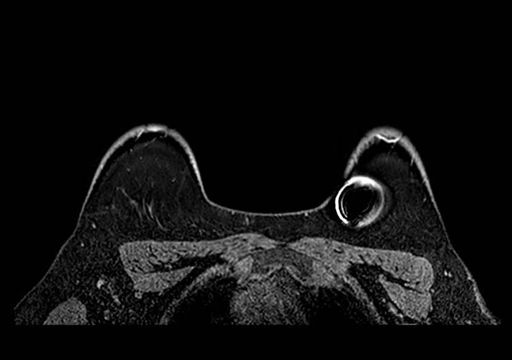
Metal / Susceptibility - Clip
Biopsy clip susceptibility artifact. Axial fat-saturated image demonstrates focal signal void with surrounding geometric distortion at the site of a metallic biopsy marker clip. The blooming artifact substantially exceeds the physical clip dimensions and can reduce local conspicuity of adjacent enhancement. Correlation with known clip location and prior imaging helps contextualize the artifact extent.
Motion Artifacts
Key Points
- Respiratory motion causes ghosting along phase-encode direction
- Characteristic zebra stripe pattern from periodic motion
- Can blur margin sharpness and local contrast transitions
- Subtraction misregistration can alter apparent enhancement patterns
- Fix: high-temporal-resolution DCE; acceleration (compressed sensing, parallel imaging, partial Fourier) with SNR trade-off; patient coaching; retrospective correction
Motion artifacts arise from respiratory, cardiac, and voluntary movement during acquisition. Unlike head MRI, breast imaging cannot easily leverage breath-hold techniques for long DCE acquisitions. Normal respiration causes cyclic anterior-posterior displacement; anxiety or discomfort amplifies motion. Long acquisition times and sequences with long echo trains (such as single-shot EPI DWI) are particularly vulnerable.
Motion manifests as blurring of structure margins, ghosting along the phase-encode direction, and a characteristic zebra stripe pattern from periodic respiratory motion. On subtraction imaging, misregistration between pre- and post-contrast acquisitions can alter apparent enhancement intensity and distribution (see Figure 20 in the Enhancement Artifacts section).
High-temporal-resolution DCE sequences reduce motion sensitivity by shortening each acquisition window. Beyond compressed sensing, other acceleration methods such as parallel imaging, partial Fourier, and reduced phase resolution can also shorten readouts and lessen motion sensitivity. The trade-off is reduced SNR with increasing acceleration, so acceleration should be tuned to preserve diagnostic image quality while limiting motion artifact. Radial k-space trajectories (such as GRASP and radial VIBE) are also motion-robust due to continuous data acquisition and reduced sensitivity to periodic motion. Clear patient instructions before scanning and comfortable positioning reduce voluntary motion. Retrospective motion correction tools are increasingly available as post-processing options on modern platforms.

Motion - T1
Motion artifact on T1-weighted sequence. Axial T1-weighted image demonstrates image blurring and ghosting in the phase-encode direction resulting from patient motion during acquisition. Smearing of anatomic boundaries and duplication of structures in the phase direction are characteristic features.
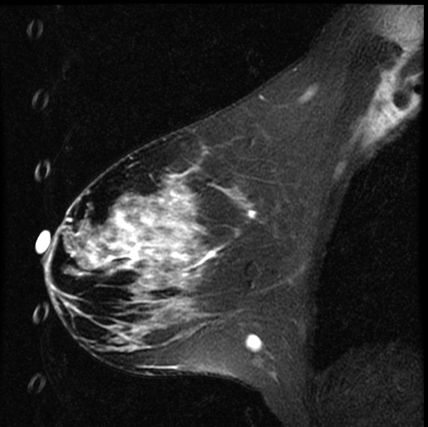
Motion - Respiratory Ghosting from Fiducial Marker
Respiratory ghosting from a T2-bright fiducial marker. Sagittal fat-saturated T2-weighted image demonstrates a column of discrete, circular ghost replicas propagating in the phase-encode direction along the anterior image margin. The source is a fluid-filled cylindrical fiducial marker at the anterior breast, which is markedly T2-bright and subject to cyclic respiratory displacement. The discrete, round morphology of each ghost reflects the cross-sectional geometry of the cylindrical marker; the regular spacing reflects the periodicity of respiratory motion relative to TR. Recognition is aided by correspondence between the ghost shape and the source structure, and by the predictable propagation along the phase-encode axis.

Motion - Cardiac Ghosting
Cardiac ghosting artifact. Axial T1-weighted image demonstrates periodic ghosting in the phase-encode direction arising from cardiac pulsation transmitted through the chest wall. The ghost replicas repeat at intervals determined by the cardiac cycle relative to TR and project across the axillary region.
Aliasing (Wrap-Around) Artifacts
Key Points
- Occurs when anatomy outside FOV wraps into the imaging volume
- Skin line, arms, contralateral breast are common sources
- Key recognition: aliased signal follows contour of source structure
- Phase-encode direction determines wrap orientation
- Fix: increase FOV; oversampling; saturation bands outside FOV; no-phase-wrap option
Aliasing occurs when anatomy outside the field of view is undersampled and wraps into the imaging volume, projecting over the breast tissue. In breast MRI, wrap-around typically introduces signal from the skin, arms, lateral chest wall, or even the contralateral breast depending on FOV and phase-encode direction. The artifact is most common when the FOV is too small in the phase-encode direction.
The key to recognizing aliasing is that the wrapped signal follows the contour of its source structure. High-intensity skin signal wrapping into the center of the image will trace the same curve as the skin line at the breast periphery. Understanding the phase-encode direction for a given acquisition helps predict where wrap-around will appear and from what source.
Solutions include increasing the FOV, enabling no-phase-wrap (oversampling) options, or placing saturation bands outside the FOV boundary. Saturation bands suppress signal from out-of-field structures - such as the arms or contralateral breast - before they are sampled, preventing them from aliasing into the image. This is a practical and often underutilized tool, particularly useful when FOV expansion would compromise spatial resolution or scan time.

Aliasing - Axial
Aliasing (wrap-around) artifact: axial plane. Although the primary breast anatomy appears contained within the FOV, aliasing arises when anatomy outside the FOV boundary - here posterior thoracic and paraspinal soft tissues - is not adequately suppressed. Without oversampling in the phase-encode direction, these out-of-FOV signals are undersampled and fold back into the image, appearing to originate from within the breast volume. The artifact is particularly deceptive when the aliased structure is not immediately recognizable as displaced anatomy.
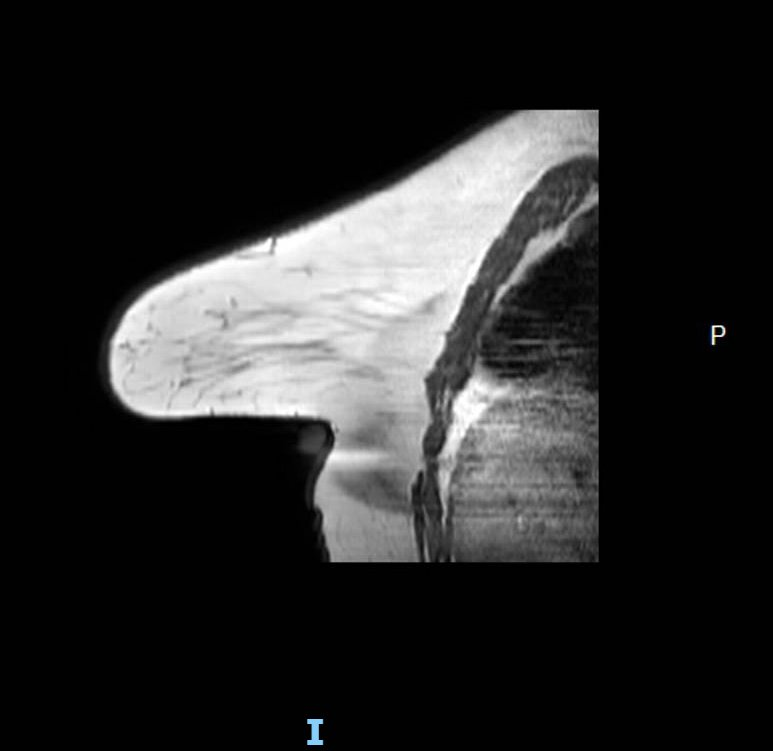
Aliasing - Contralateral Wrap
Aliasing artifact: sagittal plane. Sagittal image demonstrates wrap-around of the contralateral breast into the image in the phase-encode direction. The left-right wrap reflects that the prescribed FOV in this plane was insufficient to encompass both breasts, causing the out-of-field breast to alias into the image. Recognition requires identifying the anatomically misplaced structure and its reflection geometry relative to the FOV edge.

Aliasing + Ghost Combined - Optional
Combined aliasing and ghosting artifact. Axial image demonstrates co-occurrence of wrap-around aliasing and motion ghosting, illustrating how overlapping artifacts can compound diagnostic difficulty. Systematic evaluation of phase-encode direction and comparison with other sequences aids disambiguation.
Chemical Shift Artifacts
Chemical shift artifact arises from the difference in resonant frequency between fat and water protons (~3.5 ppm, approximately 220 Hz at 1.5T and 440 Hz at 3T). In the frequency-encode direction, fat and water signals are spatially offset by a number of pixels determined by the ratio of this frequency difference to the receiver bandwidth. At low bandwidths the offset is large; at high bandwidths it is reduced at the cost of SNR.
In breast MRI, chemical shift artifact is most conspicuous at fat-water interfaces, especially the anterior and posterior breast margins. On localizer sequences, which are typically acquired with limited bandwidth to maximize SNR, the artifact can be particularly prominent. The dark band on one side of an interface and bright band on the other are the hallmark appearance of this frequency-encode displacement effect.

Chemical Shift
Chemical shift artifact on localizer image. Sagittal localizer image demonstrates prominent dark and bright bands at fat-water interfaces at the anterior and posterior breast margins. Localizer sequences are typically acquired with limited receiver bandwidth, which increases the frequency-encode pixel shift between fat and water and renders chemical shift artifact more conspicuous than on diagnostic sequences. The spatial offset is proportional to field strength and inversely proportional to bandwidth.
Geometric Distortion
Geometric distortion results from spatial encoding errors caused by gradient nonlinearity and B0 inhomogeneity. All MRI scanners have inherent gradient field nonlinearities that increase toward the periphery of the gradient coil. Manufacturers apply post-processing correction algorithms that remap peripheral voxels to compensate, but residual distortion and interpolation artifacts remain visible at the extremities of the imaging volume - visible as curvilinear bowing at image corners when the image is windowed to show its full extent.
In breast MRI, geometric distortion is most consequential in applications that depend on high spatial fidelity and reproducible coordinates across sequences and time points. EPI-based sequences (primarily DWI) are most susceptible due to their low effective bandwidth in the phase-encode direction. Field map-based distortion correction improves spatial fidelity in these sequences.
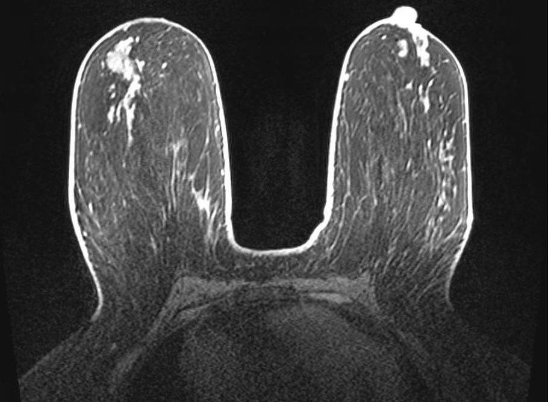
Geometric Distortion
Geometric distortion on T2-weighted imaging. Axial T2-weighted image windowed to display the full extent of the reconstructed FOV demonstrates curvilinear bowing at the image corners. This appearance reflects the scanner's gradient nonlinearity correction algorithm, which remaps peripheral voxels to compensate for inherent gradient field deviation at the extremities of the imaging volume. While the correction reduces geometric error centrally, residual distortion and interpolation artifacts remain visible at the periphery, which can affect tasks that require precise geometric accuracy.
Partial Volume Artifacts
Key Points
- Occurs when multiple structures occupy the same voxel
- Breast tissue folding on itself is a common cause in prone positioning
- Apparent signal represents average of overlapping tissues
- Can generate apparent focal interfaces and reduce conspicuity of small structures
- Fix: thinner slices; always scroll through adjacent slices to confirm
Partial volume artifact occurs when two or more tissue types occupy the same imaging voxel, producing a signal that represents their average rather than either tissue individually. In breast MRI, this commonly occurs when breast tissue folds upon itself during prone positioning, particularly in patients with larger or ptotic breasts. The folded tissue creates apparent signal abnormalities on a single slice that resolve when scrolling through the volume.
Recognition requires reviewing adjacent slices. Signal produced by partial volume averaging from tissue folding changes markedly across neighboring slices as fold geometry changes through the stack. Thinner slice acquisitions reduce partial volume effects but increase scan time and may reduce signal-to-noise ratio. When partial volume artifact is suspected, careful review of the entire stack is essential before final sequence-level quality assessment.
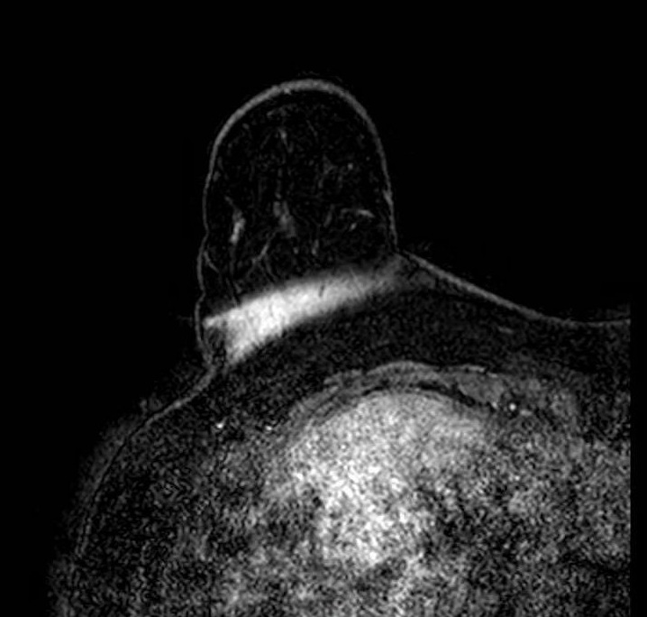
Partial Volume / Breast Fold
Partial volume artifact at a breast fold. Sagittal image shows abrupt signal change where tissue curves back on itself, creating a plane of partial volume averaging and an artifactual interface. The breast remains within the FOV; the effect reflects mixed tissue signal within single voxels at the fold. The appearance changes across adjacent slices as the fold geometry shifts through the stack.
Implant-related Artifacts
Implants can produce localized susceptibility, shading, and fat-suppression nonuniformity near implant margins. Recognition of these effects helps contextualize peri-implant signal variation.
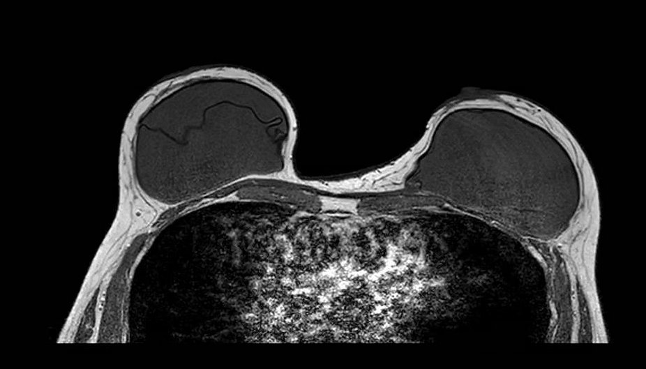
Implants
Implant-related artifact. Axial T1-weighted image in a patient with silicone implants demonstrates susceptibility-related signal changes and geometric distortion at the implant margins.
Gibbs Ring Artifact (Truncation Artifact)
Key Points
- Arises from Fourier truncation of finite k-space data
- Appears as parallel ringing bands at high-contrast interfaces (skin-air, skin-parenchyma, implant margins)
- More pronounced in the phase-encode direction
- Most visible on high-contrast sequences such as T2-weighted imaging
- Fix: increase phase-encode steps; zero-fill interpolation
In breast MRI, it is easiest to see at skin-air, skin-parenchyma, and implant margins, especially in the phase-encode direction and on high-contrast sequences (e.g., T2). Reduce it by increasing phase-encode steps (more k-space lines) at scan-time cost; zero-fill interpolation can smooth the appearance but does not recover true spatial resolution. Recognition of the characteristic parallel-band pattern of Gibbs ringing helps differentiate it from true lesions.

Gibbs ring artifact most noticable at implant interface (axial, IR sequence)
Gibbs ringing is a Fourier truncation artifact from finite k-space sampling. Inverse FFT of truncated data fails to represent the highest spatial frequencies at abrupt transitions, generating thin parallel bright/dark bands near high-contrast boundaries.
Enhancement Artifacts: Subtraction Error and T1 Shine-Through
Key Points
- Two distinct mechanisms produce false signal on subtraction images: motion misregistration and intrinsic T1 shortening
- Subtraction error: bright/dark crescents at tissue boundaries from pre/post motion mismatch
- T1 shine-through: blood products, proteinaceous fluid, mucinous tissue, silicone, or incompletely suppressed fat remain high on subtraction without gadolinium uptake
- Key rule: review pre-contrast source images; if the focus is already bright before contrast, it is not enhancement
- Fix: retrospective registration; compare source phases; T2 imaging and kinetic analysis to characterize indeterminate foci
DCE breast MRI relies on digital subtraction of pre-contrast from post-contrast images to isolate enhancing tissue. Two mechanisms can produce false or misleading signal on subtraction images: subtraction misregistration (subtraction error) and T1 shine-through.
Subtraction Error (Motion Misregistration). Subtraction error results from motion between the pre-contrast and post-contrast acquisitions. When the two volumes are not spatially aligned, tissue movement between acquisitions leaves a residual signal differences on the subtracted image falsely representing enhancement. The artifact appears as a bright crescent or ring adjacent to a structure boundary, most commonly at the chest wall, heart margin, or skin surface, with a corresponding dark crescent on the opposite side. On more severe misregistration, entire regions can appear falsely enhanced or suppressed. When subtraction images appear suspicious, reviewing the source (non-subtracted) post-contrast images is essential to determine whether enhancement is real.
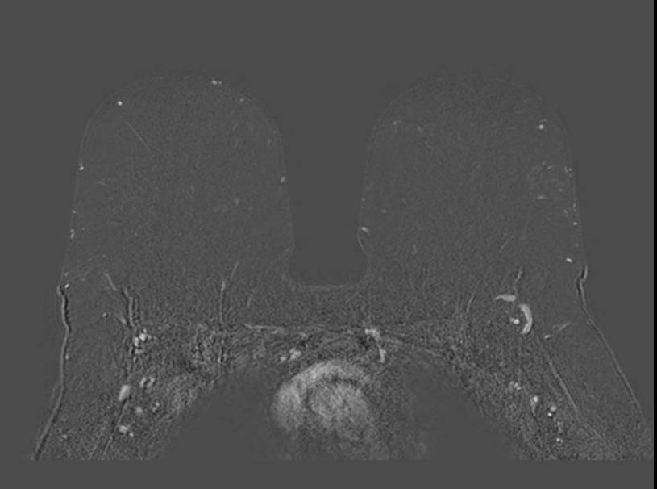
Enhancement - Subtraction Misregistration
Subtraction misregistration artifact on dynamic contrast-enhanced imaging. Ghost artifacts from cardiac and respiratory motion propagate in the phase-encode direction and produce false signal on the subtracted image, overlapping with true enhancing foci in the right breast. The ghost replicas alter local conspicuity and can mimic or obscure enhancement. Review of non-subtracted source images confirms which foci represent true gadolinium uptake.
T1 Shine-Through. T1 shine-through occurs when short T1 tissue, and therefore bright on T1-weighted images at baseline, stays bright on post-contrast images and bright on the subtraction image despite the absence of gadolinium uptake. Common causes in breast MRI include hemorrhage or blood products (methemoglobin), proteinaceous cyst fluid, mucinous tissue, fat (when fat suppression is incomplete), and silicone. Being bright on both pre- and post-contrast images, incomplete cancellation on subtraction can produce a residual high-signal focus that mimics enhancement. Recognition requires comparison of pre-contrast source images: a focus that is already bright before contrast and shows no signal increase between phases does not represent true enhancement.
Conclusion
Artifacts in breast MRI are pervasive and multifactorial, arising from field inhomogeneity, incomplete fat suppression, metallic hardware, motion, aliasing, chemical shift, geometric distortion, partial volume effects, Gibbs ringing, enhancement misregistration, T1 shine-through, and structured noise patterns. These artifacts alter signal behavior, spatial fidelity, and enhancement conspicuity in ways that can simulate or obscure pathology. Because artifacts change image appearance in predictable, physics-based ways, understanding their origins supports consistent recognition and troubleshooting.
Modern MRI systems and protocol standardization enable substantial artifact mitigation when properly applied. Radiologists and technologists must work collaboratively to recognize artifacts promptly, troubleshoot root causes, and adopt standardized acquisition and quality-assurance workflows. Importantly, no single mitigation strategy is universally applicable; effective artifact management requires matching the solution to the underlying cause and accepting that corrective measures often involve trade-offs among SNR, spatial resolution, and scan time.
References
- Hargreaves BA, Worters PW, Butts Pauly K, Pauly JM, Koch KM, Gold GE. Metal-induced artifacts in MRI. AJR Am J Roentgenol. 2011;197(3):547-555. PubMed | DOI
- Del Grande F, Santini F, Herzka DA, Aro MR, Dean CW, Gold GE, Carrino JA. Fat-Suppression Techniques for 3-T MR Imaging of the Musculoskeletal System. Radiographics. 2014;34(1):217-233. PubMed | DOI
- Ojeda-Fournier H, Choe KA, Mahoney MC. Recognizing and Interpreting Artifacts and Pitfalls in MR Imaging of the Breast. Radiographics. 2007;27(Suppl 1):S147-S164. PubMed | DOI
- Morelli JN, Runge VM, Ai F, et al. An Image-based Approach to Understanding the Physics of MR Artifacts. Radiographics. 2011;31(3):849-866. PubMed | DOI
- Graves MJ, Mitchell DG. Body MRI artifacts in clinical practice: a physicist’s and radiologist’s perspective. J Magn Reson Imaging. 2013;38(2):269-287. PubMed | DOI
- Macura KJ, Ouwerkerk R, Jacobs MA, Bluemke DA. Patterns of Enhancement on Breast MR Images: Interpretation and Imaging Pitfalls. Radiographics. 2006;26(6):1719-1734. PubMed | DOI
- Kuhl CK. The Current Status of Breast MR Imaging. Part I. Choice of Technique, Image Interpretation, Diagnostic Accuracy, and Transfer to Clinical Practice. Radiology. 2007;244(2):356-378. PubMed | DOI
- Dietrich O, Raya JG, Reeder SB, Reiser MF, Schoenberg SO. Measurement of Signal-to-Noise Ratios in MR Images: Influence of Multichannel Coils, Parallel Imaging, and Reconstruction Filters. J Magn Reson Imaging. 2007;26(2):375-385. PubMed | DOI
- Arena L, Morehouse HT, Safir J. MR Imaging Artifacts that Simulate Disease: How to Recognize and Eliminate Them. Radiographics. 1995;15(6):1373-1394. PubMed | DOI
- Stadler A, Schima W, Ba-Ssalamah A, Karner J, Eisenhuber E. Artifacts in Body MR Imaging: Their Appearance and How to Eliminate Them. Eur Radiol. 2007;17(5):1242-1255. PubMed | DOI
- Veraart J, Fieremans E, Jelescu IO, Knoll F, Novikov DS. Gibbs Ringing Artifact Removal Based on Local Subvoxel-Shifts. Magn Reson Med. 2016;76(5):1574-1581. PubMed | DOI
- Dixon WT. Simple Proton Spectroscopic Imaging. Radiology. 1984;153(1):189-194. PubMed | DOI
- Pruessmann KP, Weiger M, Scheidegger MB, Boesiger P. SENSE: Sensitivity Encoding for Fast MRI. Magn Reson Med. 1999;42(5):952-962. PubMed | DOI
- Griswold MA, Jakob PM, Heidemann RM, et al. Generalized Autocalibrating Partially Parallel Acquisitions (GRAPPA). Magn Reson Med. 2002;47(6):1202-1210. PubMed | DOI
- Bernstein MA, King KF, Zhou XJ. Handbook of MRI Pulse Sequences. Elsevier Academic Press; 2004. Publisher
- McRobbie DW, Moore EA, Graves MJ, Prince MR. MRI from Picture to Proton. 2nd ed. Cambridge University Press; 2006. Publisher | PMC
- Mann RM, Kuhl CK, Moy L. Contrast-Enhanced MRI for Breast Cancer Screening. J Magn Reson Imaging. 2019;50(2):377-390. PubMed | DOI
- Schoenberg SO, Dietrich O, Reiser MF, eds. Parallel Imaging in Clinical MR Applications. Springer; 2007. DOI